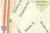
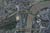
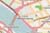
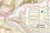

<% if (mappingAPI == "esri") {%>
<%}%>
<% if (mappingAPI == "leaflet") {%>
<%}%> <% if (mappingAPI == "esri") {%>
<%}%>
<% if( mappingAPI == "leaflet") {%> <%}%> <% if (mappingAPI == "esri") {%> <%}%>
<%= appName %>
Geosearch
x
Geosearch
Search in Map Only
Go
Dismiss
Basemaps

Streets
Satellite

Hybrid
Topo
Terrain
Gray

OSM
NatGeo

Nat'l Map
Map Layers
Legend
Map scale
1:
Latitude
y
|
Longitude
x
(center)